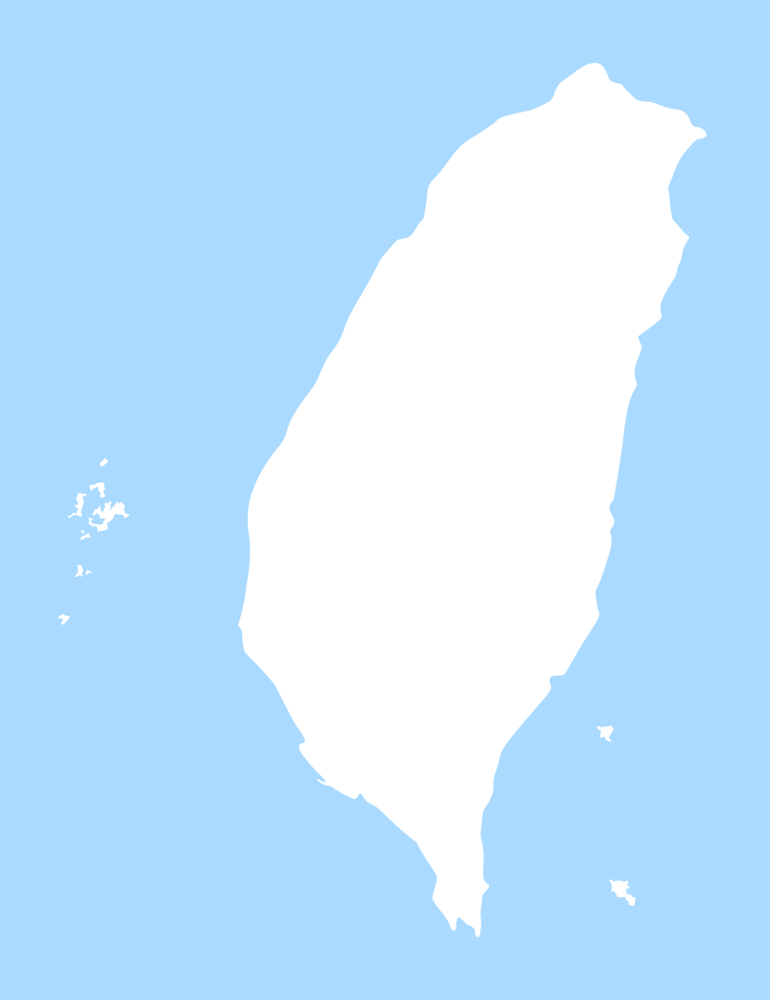

車輛配件 / 安全帽 /
經銷商
新北-浮洲門市
直營門市
電話:(02)-2222-5978
傳真:02-26575596
地址:新北市僑中三街66巷8號7樓
信箱:wolfer_5978666@gmail.com
營業時間
星期一 - 星期五 / 10:00 - 20:00
星期六 / 10:00 - 18:00
星期日 / 公休
操作說明
全台灣有多個WOLFER據點為您服務！請選擇地圖區域看據點資訊，並且展開詳細介紹。
